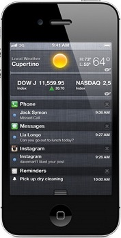

|  |
Guide to Buying Smartphones (making further changes on personal PC on private branch) attempts to demystify the world of smart phones for those planning to get a smart phone for themselves or their loved ones.
At a fundamental level, a smartphone comprises of the hardware (handset), operating system on top of the hardware of the handset, and the applications on top of the operating system.
While there are many ways to classify smartphones in the market, one approach is to classify them based on the level of customization of the operating system from the base version.
Those without any customizations can be called phones with vanilla operating system phones. The iPhone, Blackberry, Google Nexus phones fall under the category of vanilla operating system phones.
Most Android phones from leading handset manufacturers fall under the category of customized operating system phones. For example, Samsung adds the Touchwiz customization, while HTC adds the Sense customization to most of their models.
|